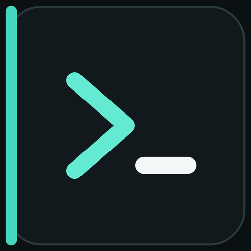

Inspect
Health, readiness, workflows, knowledge, and workforce state stay visible through read-only MCP tools.

Unified AI SystemOPEN SOURCE / TERMINAL FIRST
A self-hosted AI gateway that turns plain language into structured work and connects Codex, Cursor, or Cline through one governed MCP boundary.
docker run --rm ghcr.io/happy520ai/unified-ai-system/ai-gateway-service:0.4.9 pnpm --silent gateway demo "Build a small API for my team" --enhance --profile coding --json
The first verified path is fake-provider only. Real-provider execution remains explicit and scoped.
ROUGH REQUEST / EXPLICIT WORK
The original input stays visible. A deterministic local engine adds execution requirements, output constraints, clarification policy, and completion criteria without calling a provider.
Loading the deterministic engine...Loading the local engine. No request will leave this page.
ONE RUNTIME / THREE CLIENTS
Every path below starts the same published, credential-free MCP container. No repository clone is required.
DIRECT MCP CONNECTION
Register the published stdio server, restart Codex, then inspect it with /mcp.
codex mcp add unified-ai-system -- docker run --rm -i ghcr.io/happy520ai/unified-ai-system/mcp-server:0.4.9
GENERATED LOCAL CONFIG
Generate a local Cursor MCP configuration without writing provider credentials.
pnpm dlx add-mcp@2.0.0 "docker run --rm -i ghcr.io/happy520ai/unified-ai-system/mcp-server:0.4.9" --name unified-ai-system -a cursor -y
DIRECT MCP INSTALLATION
Install the same published server through the Cline CLI with an isolated stdio transport.
cline mcp install unified-ai-system --yes --json -- docker run --rm -i ghcr.io/happy520ai/unified-ai-system/mcp-server:0.4.9
THE GATEWAY BOUNDARY
Health, readiness, workflows, knowledge, and workforce state stay visible through read-only MCP tools.
Provider-free enhancement turns rough natural language into explicit work while preserving the original request.
The local fake provider is the credential-free default. Real calls require explicit, scoped authorization.
A SMALLER TRUST SURFACE
PUBLIC EVIDENCE
Source, registry metadata, containers, and checks are public and independently inspectable.
PUBLIC ENGINEERING PREVIEW